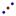

UK English: Centre
Center[Conic]: Returns the center of a circle, ellipse, or hyperbola.
Note: Also see tool  Midpoint or Center
Centroid[Polygon]: Returns the centroid of the polygon.
Corner[Number
n of Corner]: Creates a point at the corner of the Graphics View
(n = 1, 2, 3, 4) which is never
visible on screen.
Corner[Image,
Number n of Corner]: Creates a point at the corner of the image
(n = 1, 2, 3, 4).
Corner[Text,
Number n of Corner]: Creates a point at the corner of the text
(n = 1, 2, 3, 4).
Note: The numbering of the corners is counter-clockwise and starts at the lower left corner.
UK English: TurningPoint
Extremum[Polynomial]: Yields all local extrema of the polynomial function as points on the function graph.
Focus[Conic]: Yields (all) foci of the conic section.
InflectionPoint[Polynomial]: Yields all inflection points of the polynomial as points on the function graph.
Intersect[Line g, Line h]: Yields the intersection point of lines g and h.
Intersect[Line, Conic]: Yields all intersection points of the line and conic section (max. 2).
Intersect[Line, Conic, Number n]: Yields the nth intersection point of the line and the conic section.
Intersect[Conic c1, Conic c2]: Yields all intersection points of conic sections c1 and c2 (max. 4).
Intersect[Conic c1, Conic c2, Number n]: Yields the nth intersection point of conic sections c1 and c2.
Intersect[Polynomial f1, Polynomial f2]: Yields all intersection points of polynomials f1 and f2.
Intersect[Polynomial f1, Polynomial f2, Number n]: Yields the nth intersection point of polynomials f1 and f2.
Intersect[Polynomial, Line]: Yields all intersection points of the polynomial and the line.
Intersect[Polynomial, Line, Number n]: Yields the nth intersection point of the polynomial and the line.
Intersect[Function f, Function g, Point A]: Calculates the intersection point of functions f and g by using Newton's method with initial point A.
Intersect[Function, Line, Point A]: Calculates the intersection point of the function and the line by using Newton's method with initial point A.
Note: Also see tool  Intersect
two Objects
Intersect
two Objects
Midpoint[Point A, Point B]: Returns the midpoint of points A and B.
Midpoint[Segment]: Returns the midpoint of the segment.
Note: Also see tool Midpoint or Center
Point[Line]: Returns a point on the line.
Point[Conic]: Returns a point on the conic section.
Point[Function]: Returns a point on the function.
Point[Polygon]: Returns a point on the polygon.
Point[Vector ]: Returns a point on the vector.
Point[Point, Vector]: Creates a new point by adding the vector to the given point.
Note: Also see
tool  New Point
New Point
Root[Polynomial]: Yields all roots of the polynomial as intersection points of the function graph and the x-axis.
Root[Function, Number a]: Yields one root of the function using the initial value a for Newton's method.
Root[Function, Number a, Number b]: Yields one root of the function in the interval [a, b] (regula falsi).
Vertex[Conic]: Returns (all) vertices of the conic section.